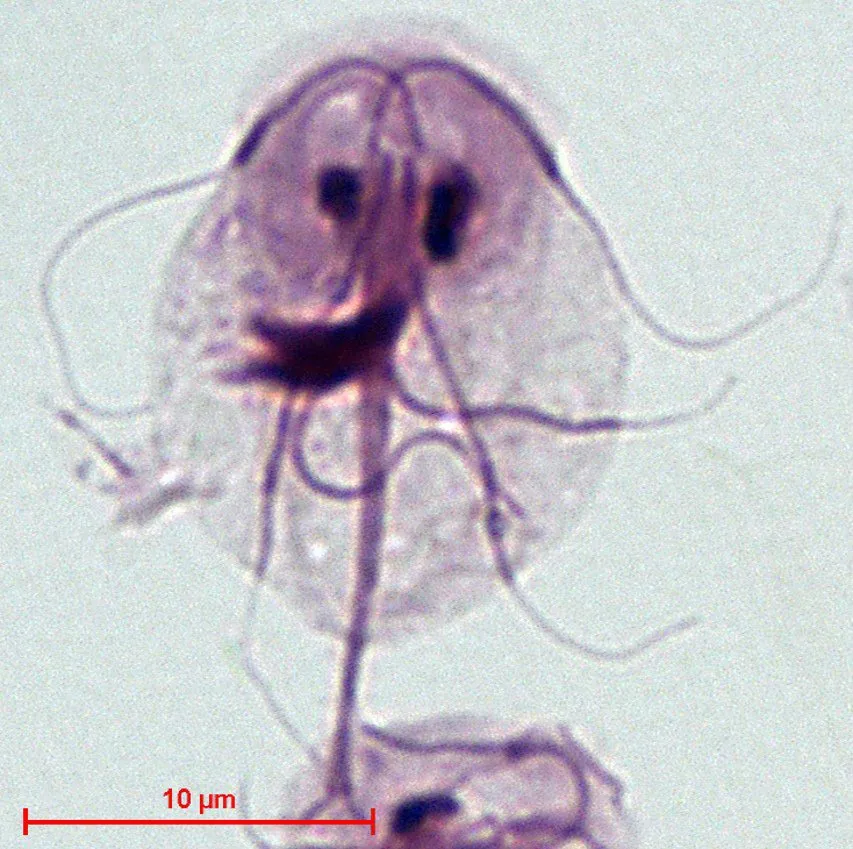

其他无脊椎动物 · 动物界
贾第虫 Giardia lamblia

寄生于小肠的鞭毛虫，包囊随粪便排出并污染水源，经口感染引起腹泻，是常见的水源性肠道寄生虫。
- 分类
- 门双滴虫门纲鞭毛虫纲目双滴虫目科贾第虫科属贾第虫属
- 栖息环境
- 人或动物的小肠上段，包囊随粪便排入水体与土壤
- 地理分布
- 世界性分布，中国部分地区感染率仍较高
- 保护级别
- 无保护问题；为常见肠道寄生虫，防控靠饮水卫生与洗手
物种志
贾第虫的生活史分为滋养体和包囊两个阶段。滋养体呈梨形，长约十至二十微米，两侧对称，有八根鞭毛和两个细胞核，腹面有一个吸盘状的结构，用来吸附在小肠黏膜上。包囊呈椭圆形，直径约十微米，囊壁厚实，能在外界存活数周至数月，对氯消毒有较强的耐受性。
它呈世界性分布，在中国的感染率在部分地区仍然较高，宿主包括人、犬、猫、牛和野生动物。感染途径是粪口传播：包囊随粪便排出，污染饮水、食物、蔬菜或手，被人吞食后在小肠脱囊成为滋养体，吸附在肠壁上繁殖，引起贾第虫病，表现为腹泻、腹痛、腹胀、恶心和吸收不良，病程可长达数周。饮用未煮沸的溪水、井水或在卫生条件差的地区进食生冷食物是主要风险，水厂常规氯消毒不能可靠杀灭包囊。防护的关键是饮用煮沸的水或经正规过滤的水，饭前便后洗手，蔬果洗净，野外徒步时不直接饮用溪水。
形态与习性
- 滋养体梨形，长十至二十微米，有八根鞭毛
- 包囊椭圆形，直径约十微米，囊壁厚
- 感染途径粪口传播，包囊污染饮水、食物或手
- 症状腹泻、腹痛、腹胀与吸收不良
- 抵抗力包囊对氯消毒耐受，可存活数周至数月
- 防护饮水煮沸或过滤，饭前便后洗手
趣味知识
- 它的包囊能扛住自来水里的余氯，所以光靠氯消毒并不保险。
- 它用腹面的吸盘贴在小肠壁上，冲也冲不走。
- 野外看着清亮的溪水，可能就带着它的包囊，喝之前一定要煮开。